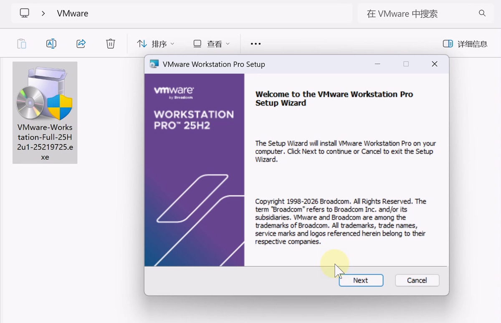
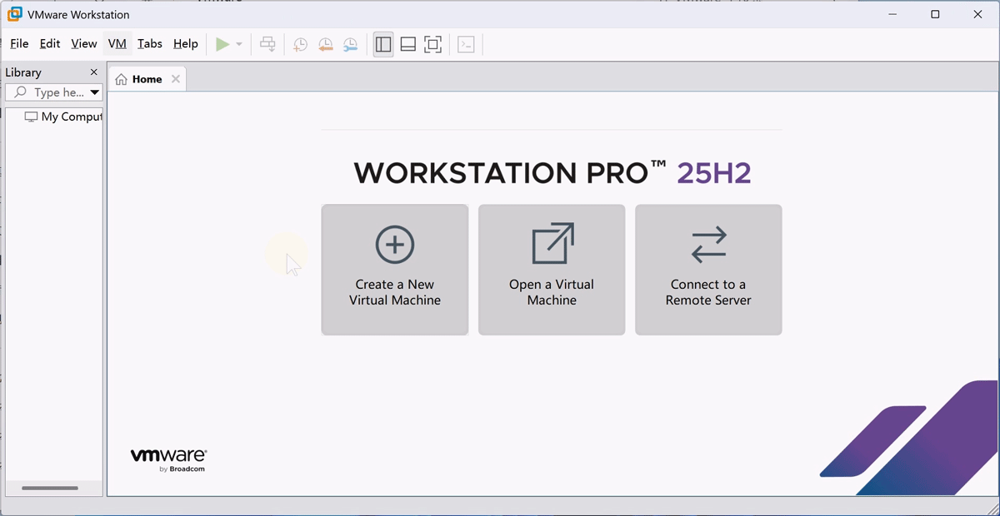
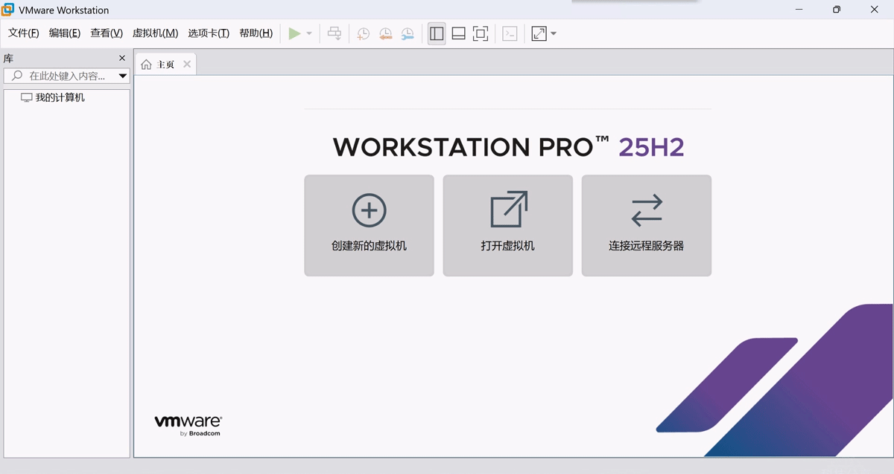

VMware Workstation 是一款 虚拟机软件，可以在一台电脑里运行多个系统。常见用途：测试系统、软件开发、学习 Linux、搭建实验环境。博通收购 VMware 后，VMware Workstation Pro 和 VMware Fusion 版本，个人用户可以免费使用。支持Windows,macOS,Linux。
1、打开博通官网注册一个账号，点击注册>>
注册时需要填真实邮箱，需要接收验证码，个人信息国家可以选择China或其它国家。
2、账号注册好了，点以下链接直达下载页面
直达下载页面>>，Windows找到 VMware Workstation Pro 即可，MacOS找到 VMware Fusion 即可，目前最新版本是25H2。
第一次下载需勾选左上角的同意协议，先点击“Terms and Conditions”，才能勾选，有可能还需要填一下个人信息，按照提示操作即可下载。


VMware Workstation Pro 25H2 Windows版汉化包下载地址：
点击下载>> | 备用下载地址>>
pref.locale = “zh”

1. 硬件与虚拟平台升级
| 特性 | VMware 17 | VMware 25H2 | 影响 |
|---|---|---|---|
| 虚拟硬件版本 | v21 | v22 | 支持新一代 CPU、DDR5、NVMe 1.3c、PCIe 5.0，I/O 与整体性能更强 |
| USB 支持 | USB 3.1 | USB 3.2 | 外设传输速度更快、兼容性更好 |
| 新 CPU 支持 | 至 Intel 12/13 代、AMD Zen 4 | Intel Lunar/Arrow/Meteor Lake、AMD Zen 5 | 适配最新桌面 / 移动平台，指令集优化更充分 |
| Hyper‑V 兼容 | 基础兼容 | Hyper‑V/WHP 检测与状态显示 | Windows 11 下共存更友好，运行模式更清晰 |
2. 新增核心工具与能力
dictTool（25H2 独有）：命令行工具，可直接查看 / 编辑 .vmx、preferences 等配置文件，适合自动化与批量管理。
vctl 移除：25H2 不再包含 vctl 工具（容器相关）。
虚拟磁盘映射：17 已移除该功能（16 及更早版本保留）。
3. 系统兼容性扩展
25H2 新增支持：
客户机：Windows 11 25H2、RHEL 10、Fedora 42、Debian 13、openSUSE Leap 16、Oracle Linux 10 等。
主机：RHEL 10、Fedora 42 等新系统。
17 系列：最高支持到 Windows 11 23H2、RHEL 9、Ubuntu 22.04 等。
4. 图形与性能优化
25H2：改进 DirectX 与 Vulkan 虚拟驱动，3D 渲染更流畅；优化 Windows 11 界面响应与显示性能。
17：支持 DirectX 11、OpenGL 4.3，满足基础 3D 需求。
5. 语言与界面变化
25H2：官方不再提供简体中文，仅含英、法、日、西四种语言（可通过第三方汉化）。
17：原生支持简体中文界面。